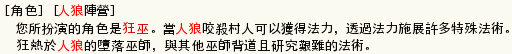
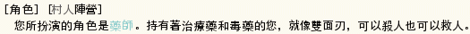
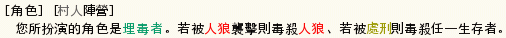
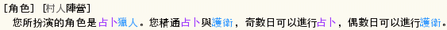
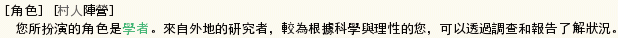
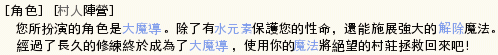
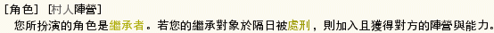

＜參加遊戲時必須注意的事情＞
「關於遊戲中的內容請不要在遊戲以外的場合進行討論。」
如果這樣做的話遊戲將會變得沒有意思了。
特別是當自己死亡之後把其他人的角色公開出來，請絕對不要有這種行為。
[遊戲目的]
某個村子裡面有人狼和村民住在一起，每天晚上人狼都會襲擊村民。
感到困擾的村民在集會所進行討論，決定一天一人，將被懷疑是人狼的人給進行處刑。
村民是為了守護村子，人狼是為了拿下這個村子，還有不知道從哪來的妖狐在旁窺測。
各種不同角色擔當的玩家們必須絞盡腦汁，使處刑的話題朝著對自己有利的形式發展。
[勝利條件]
・村民的勝利 將人狼、妖狐全滅
・暴民的勝利 村民的勝利時，場上存在唯一的暴民，或全場皆為暴民
・人狼的勝利 殺死妖狐，並使村民的人數和人狼的人數相同或是更少。
・妖狐的勝利 人狼全滅的時候、以及村民的人數和人狼的人數相同或是更少的時候，若妖狐存活就算勝利。
・惡魔的勝利 惡魔先被人狼咬過之後，然後又被村民吊死，則儀式完成直接算惡魔勝利。
・教派的勝利 若場上全員皆為教徒時，則為教派的勝利。
您是否存活下來並不是您玩這個遊戲的目的。
就算自己犧牲了，您的隊伍勝利的話則您也屬於勝利者。
[村民的人口分配]
村子裡面有著特殊的能力者和思想異常的人存在。
以下就是村子的人口分配表。
・希望村民勝利的人們 村民、占卜師、靈能者、獵人、共有者、牧師、藥師、埋毒者、逃亡者、學者、大魔導、卡片師
・希望暴民勝利的人們 進入暴民模式人側職業
・希望人狼勝利的人們 人狼、幼狼、狂人、狂巫
・希望妖狐勝利的人們 妖狐、背德、哥德法
・希望惡魔勝利的人們 惡魔
・希望教派勝利的人們 教主、已加入教派的人
・不一定會在哪個陣營的人們 模仿師、繼承者
[角色介紹]
在此介紹有出場的角色。
| 角色 | -- 説明 -- |
|---|---|
| 村民 | 沒有特殊的能力。但是您的智慧和勇氣應該是可以拯救這個村子的。 村民職業微調(開村者可視情況勾選): 村民可以謹限「四日夜」，可以推理其中一人是否為'無職村民'，判斷村占用。 |
| 人狼 | 可以在夜間與其他人狼共謀殺害其中一名村民。 而且，知道自己以外的其他人狼是誰。 您那強大的力量可以將村民給殺害吃掉。 在晚上可以用只有人狼才聽得懂的嚎叫聲，在人狼之間進行對話。 人狼之間無法互相殺害。 |
| 幼狼 | 剛出生的幼狼，無法咬人也和人狼語言不通所以互不知道。 人狼無法咬死幼狼，且人狼咬到幼狼時會知道咬到幼狼了。 幼狼會知道昨天晚上人狼襲擊的是誰，但無法知道是誰咬的。 當幼狼被吊死時，當晚系統提示幼狼被吊死，人狼可以咬穿獵人藥師牧師的守護，並可以咬死惡魔和妖狐，惟逃亡者和幼狼咬不死。 但是當人狼全滅只剩幼狼時，幼狼也會跟隨人狼而去。 幼狼不管占卜師或靈能結果顯示都是「狼」，且計算在狼的勝負條件內。 幼狼第八日晚上可以咬人，不會增加狂巫法力或狂人怒氣，咬到惡魔也不算。 幼狼職業微調(開村者可視情況勾選): 幼狼額外咬人：幼狼可於九日夜，再增加一次咬人的機會。 |
| 占卜師 | 在夜間可以挑選一名村民進行占卜判斷是「人」還是「狼」，隔天早上占卜結果將會出現。 但是能得知的訊息只有判斷是「人」還是「狼」而已。 占卜狂人和靈能者也都只會顯示「人」而已。 然後，如果占卜到妖狐的話妖狐將會死亡。占卜師是妖狐的天敵。 對妖狐進行占卜的話占卜結果將會出現「人」。 您手中掌握著村民的勝利希望！ |
| 靈能者 | 第二天以後可以得知前一天被處刑的人是「人」還是「狼」。 靈能必須要消費一個晚上的時間，隔天早上才會出現結果。 雖然是很馬後炮的能力，但是依據您的努力程度有可能對遊戲有很大的貢獻。 |
| 狂人 | 崇拜人狼的人類，若是人狼勝利的話您也將會勝利。 但是您將被隸屬於村民的其中一人。 您可偽裝成占卜師，用巧妙的話術使村民陷入混亂。 雖然是屬於人狼隊伍，但是就算被占卜也是顯示「村民」。 狂人職業微調(開村者可視情況勾選): 狂人狼知識(狂1)：狂人第三、六、九等三的倍數日早上可以知道一隻狼的名稱。 狂人自爆(狂2)：狂人可於晚上自爆(註：非暴斃)，造成混亂。 狂人怒氣系統(狂3)：狂人於每人狼襲擊失敗時，可以獲得怒氣１點，可使用擊昏或擊忘功能。 擊忘：若目標無副職則變為失憶者８，耗怒氣２。 擊昏１：讓目標從隔日白天起失憶１日，耗怒氣１。 擊昏３：選項同擊忘，讓目標從隔日白天起失憶３日，耗怒氣２。 |
| 狂巫 | 崇拜人狼的人類，若是人狼勝利的話您也將會勝利。 但是您將被隸屬於村民的其中一人。 您有多樣的法術可以使用，但是不會受狂人狼知識影響。 基本法力０，每當狼咬死一個人之後法力增加２，法力最大上限１０ 1.占卜術(法力２)：使用後可以在晚上可以選定一個人進行占卜。 指定到非人側（狐、狼、狂、惡、教）時無效，當指定到人側時會顯示該殘存者的職業與副職業。。 2.密言術(法力３)：使用後可以在隔天白天發言時多加一個選項「密言」，可以在不透漏是誰的情況下把訊息送出給所有人。 人狼、幼狼、狂人、狂巫(不包含狼信者)，可以看到是誰發言(狼側之忘卻者看不到)。 3.咒殺術(法力４)：使用後可以再晚上選定一個人進行咒殺。若對象是妖狐則咒殺成功，但若對象不是妖狐則毫無作用。 4.鼓舞術(法力５)：使用後隔日所有狼側投票數+1(人狼、幼狼、狂人、狂巫，不包含狼信者)，隨意使用將導致狼側全部顯現。 狂巫職業微調(開村者可視情況勾選): 狂巫狼信化術(巫1)：狂巫可使用狼信化術（法力５），目標若無副職且非狐側惡魔教主，則其副職變為狼信者。 |
| 獵人 | 第二天開始，您可以在夜間選擇一位村民進行保護，使之不被人狼給殺害。 但是若您自身被狼給襲擊的話，您將會死亡。 您必須判讀人狼的行動。 |
| 共有者 | 您有不可思議的力量可以得知另一名共有者是誰。 就算互相遠離也可以知道共有者同伴的想法。 若公開表示自己是共有者，可以比較容易取得他人的信任，以及生存期間比其他人久。 您被給予較多的推理時間。盡量煩惱吧。 |
| 牧師 | 第一天開始，可以祝福一位村民，使其受到票數減一。 第二天開始，您可以在夜間選擇是否施行聖域術(無法指定對象)，使人狼襲擊失敗。 人狼若襲擊成功(沒被護或是咬到狐、惡)，聖域術將保護被襲擊的人，但您將會死亡。 另外，白天時可知道昨晚是否惡魔被襲擊。 牧師職業微調(開村者可視情況勾選): 牧師祝福強化(牧1)：第一天開始，可以祝福一位村民，使其受到票數減一。 牧師偽裝偵測(牧2)：牧師可以得知今天是不是有人被偽裝，但是不知道誰偽裝誰，選項開啟時背德偽裝需要票數下降１。 |
| 藥師 | 你的身上有兩瓶藥，一瓶治療藥一瓶毒藥。 第二天開始，您可於夜間選擇一瓶藥，對其中一個對象使用。 治療藥可以治療人狼的咬傷，毒藥可以確實毒殺一人。 兩瓶藥都是只能使用一次，使用失敗的話藥瓶不會損失。 註：治療藥不是復活藥，和獵人守護類似，但是獵人可以守到妖狐惡魔，治療藥不行。 |
| 埋毒者 | 您的體內有少量的毒。 雖然自己身上因為有抗體而不會有事情，但是觸碰到您血液的人聽說會死掉。 您被處刑的時候將會亂數挑選一人毒殺。 您被人狼襲擊的時候將會亂數挑選一名人狼毒殺。 |
| 逃亡者 | 第二天開始，晚上選擇一名活著的人逃往它家。 狼無法直接咬你，獵人、牧師也無法直接保護你。 但是狼如果襲擊您所逃往的住處，或是逃亡到人狼或幼狼家中，則會死亡。 逃亡者無法撰寫遺書。 逃亡者職業微調(開村者可視情況勾選): 逃亡者選項一：逃亡者若逃到咬人的人狼家，將不會死亡。 逃亡者選項二：逃亡者若逃到獵人護衛的人家，將被獵人擊殺。 逃亡者選項三：逃亡者若逃到教主的家中，隔日可以知道該人是教主。 |
| 學者 | 外地來的學者，可針對目前村莊的生態加以研究。 事件分析和現況報告於第一日晚上不可使用 1.個案調查：可以知道一個人的"副職業"，以及是不是教徒(教主會顯示成教徒)。 2.事件分析(一次)：可以知道前一天晚上的情形。如為何會有多殺，或是沒死人的狀況。 3.現況報告(一次)：可以知道目前場上存活者的職業分佈 學者職業微調(開村者可視情況勾選): 學者調查教主(學1)：學者個案調查，若目標是教主時，顯示是教主。 學者現況詳報(學2)：學者現況調查改為較詳盡的資訊。 學者事件分析(學3)：學者可以使用事件分析。 |
| 大魔導 | ２５人以上，第九日白天時，若場上只有你一位無職村民，你將轉職成大魔導。 轉職時自動擁有水元素，水元素會投和你投票的相同人，也可以幫你擋吊死或咬死一次，水元素擋不住人狼狂暴、毒死以及入教。 基本法力２，每日回復１，法力最大上限１０ 1.解除法術(法力3)：封印目標晚上的行動(對咬人的狼或教主)、咒殺(妖狐)、還原狀態(學者能力、藥師藥品、惡魔被咬過)還原成初期狀態、 狂巫法力及背德票數歸０、解除入教以及無法入教狀態。 2.召喚水元素(法力3)：水元素如果掛了，可以重新召喚。 |
| 妖狐 | 您即使被狼襲擊也不會死亡。 但是被占卜的話就會被咒殺。 欺騙村民、欺騙人狼、使村子成為妖狐的東西。 妖狐職業微調(開村者可視情況勾選): 妖狐指定背德(狐1)：妖狐於第一日晚上可以從無職村民中指定一名當作背德。 妖狐感知能力(狐2)：妖狐可如幼狼般，知道人狼襲擊的對象，但不知是誰咬的。 |
| 背德 | 崇拜妖狐的人類，若是妖狐勝利的話您也將會勝利。 但是您將被隸屬於村民的其中一人。 知道妖狐是誰，但妖狐不知道背德是誰。 雖然是屬於妖狐隊伍，但是就算被占卜也是顯示「村民」。 您看得到妖狐的夜晚自言自語，也知道妖狐是否被襲擊。 背德職業微調(開村者可視情況勾選): 背德偽裝能力：背德可以消耗累積票數３，隔日偽裝其中一人的發言。 背德變化能力：背德若為無副職，可以消耗累積票數２，變化成對方的職業且副職變為狐信者，對大魔人狼幼狼妖狐惡魔教主無效。 背德粉紅迷霧：背德可以消耗累積票數４，隔日所有人發言看不到發言名稱。 |
| 哥德法 | 崇拜妖狐的人類，若是妖狐勝利的話您也將會勝利。 但是您將被隸屬於村民的其中一人。 屬於妖狐隊伍，但是被占卜師占卜、狂巫占卜術、狂巫咒殺術指定的話，會反過來咒殺占卜師或狂巫。 怒視：當哥德法被吊死時，會怒視當天所投票的對象，使其於三日之後暴斃。 魔幻方陣：哥德法可以因場上死亡連線數(直橫斜、斜只算兩條)知道自己同一橫列、同一直列加上斜方向４人， 共１２人(順序為亂數)的真實職業及副職業。 最多連線數到達四條時，知道自己其１２個位置的真實職業及副職業。 哥德法可於第一日晚上選擇有開選項的特化，也可以不選(不選為標準版)。 特化一(咒術特化)(哥1)：無魔幻方陣，新增絕望視線。 特化二(方陣特化)(哥2)：無怒視，新增七彩噴射。 特化三(秘術特化)(哥3)：無怒視且無魔幻方陣，新增秘術換身。狼信者、副教主不可。 絕望視線：可使用一次，只能對曾投過哥德法的人使用，讓目標三日後投票後暴斃(隔天即算過一日)。 七彩噴射：可使用一次，讓目標隔日票數上升Ｘ票(雪無效)，每條連線1.5票後再多1票，四條連線時7票。 秘術換身：可使用一次，和目標妖狐交換職業，其他不變，必須妖狐曾投票給哥德法才能使用，妖狐變成的哥德法為無特化過的。 |
| 惡魔 | 崇拜惡魔的人類，即使被狼襲擊也不會死亡。 被占卜師占卜到會顯示為「人」，但是靈腦結果會顯示「惡魔」。 您必須被人狼咬過之後，再被吊死，則完成儀式直接勝利。 靈魂負荷系統，初期為０，超過時３３會暴斃 每死一人時＋１，惡魔被人狼咬到＋３，被幼狼咬到不會增加。 惡魔被占卜師占到＋３，被狂巫占卜術占到＋２，被狂巫咒殺術指到＋５。 惡魔被咬之前，可以不限次數使用混沌術(靈魂負荷＋２)，如果指到咬人的狼或是被咬的人，則該次襲擊轉移給自己， 且人狼不知道咬到誰，但幼狼仍然知道咬到誰。 惡魔被咬之後，可以不限次數詛咒自己(靈魂負荷＋３)，使自己隔日被投票數增加三票。 惡魔被咬之後，可以不限次數使用支配(靈魂負荷＋１)，使目標的隔天白天投票對象轉給你。 另，和妖狐一樣，惡魔不計算在判定勝負的人和狼的數量之內。 |
| 教主 | 您可以每天拉一人入教，加入教派的勢力。 各加入教派的人會知道彼此，且勝利條件變為 教派的勝利。 當教主死亡時，則教徒回歸原本的身份。 若開啟副教主或教２時，第一日不能拉人入教。 模仿／繼承教主改為只有偶數日才能拉人入教。 指定投票：只能使用一次，可以讓教徒投票給前一晚指定的對象。 教主光環：只能使用一次，隔日起教徒無法對教主使用有害技能。 |
| 繼承者 | 每天晚上，選擇替身君以外的角色，若隔日它被吊死，則複製它的能力，加入它的陣營。 若繼承者繼承成功則成為該職業，無法進行繼承。 繼承成功之前為村人側。 繼承者職業微調(開村者可視情況勾選): 繼承者自暴職業：繼承者繼承成功時，系統顯示繼承的職業給所有人知道，但不指明誰是繼承者。 |
| 模仿師 | 第一天晚上，選擇替身君以外的角色，複製它的能力，加入它的陣營。 模仿成功之前為村人側。 忘卻模仿師無法進行模仿。 模仿者職業微調(開村者可視情況勾選): 模仿師自暴職業(模1)：模仿師模仿成功時，系統顯示模仿的職業給所有人知道，但不指明誰是模仿師。 模仿師生命連繫(模2)：模仿師和被模仿者生命連繫，其中一人掛了，另一人也會跟著掛，第七日開始無效。 |
| 卡片師 | 模仿師若為忘卻者或冒牌占時，醒過來的那一天會變成卡片師。 卡片一覽(人側技能)：愚者(逃亡)、魔術師(占卜)、戰車(護衛)、正義(調查)。 卡片一覽(非人側技能)：力(擊昏３)、隱者(偽裝)、塔(混沌)。 卡片一覽(新技能)：太陽(明天天氣為晴天)。 卡片師每天晚上獲得的卡片會是手上沒有的，不會重複，晚上可以不行動增加拿到想要卡片的機率。 |
[副職業介紹]
以下為角色的副職業身份。決定者與權力者固定於 16 人以上登場：
| 決定者 | 您特有的氣質使得您容易取得他人的信任。 處刑投票的票數相同時，您的那票將會有優先的效果。 但是您並不知道自己是決定者。 |
| 權力者 | 您的身份和財產對於村子來說是無法一語帶過的存在。 甚至就連其他村子都有關於您的傳言。 使用那份權力，在處刑投票的時候您的一票將會發揮兩票的效果。 |
| 四日忘卻者 | 由於你喝醉了，一時之間忘了自己的身份，以為自己是村民。 於第五日早上時會想起原本的身份。 註：四日忘卻者於四日夜仍然可進行村民推理，但五日早上若不是村民則不會顯現結果。 |
| 六日忘卻者 | 由於你喝醉了，一時之間忘了自己的身份，以為自己是村民。 於第七日早上時會想起原本的身份。 |
| 八日忘卻者 | 由於你喝醉了，一時之間忘了自己的身份，以為自己是村民。 於第九日早上時會想起原本的身份。 |
| 冒牌占 | 人側專用副職，驗副職業為無副職。 由於你太想當占卜師了，幻想自己是占卜師。 但是沒有占卜師實際的能力( 如咒殺狐、被逆咒殺、加惡魔的靈能負荷 )。 而且占卜結果由於都是你幻想的，有 1/5 的機率會是狼，4/5 是人。 同樣的人會出現同樣的結果。 |
| 絕望者 | 你身有隱藏的疾病。 到第七日投票之後，將會暴斃身亡。 |
| 復仇者 | 你帶有狂烈的復仇之心，被吊死時會以強烈的恨意詛咒你當天投票的對象，讓他也一起暴斃身亡。 |
| 狼信者 | 你是狼的追隨者，人狼的勝利是你所希望的。 |
| 大狼 | 人狼專用副職，驗副職業為無副職，第一次被占時是人，但大狼天生為忘卻６。 |
| 智狼 | 人狼專用副職，驗副職業為無副職，可驗前一晚襲擊對象的職業及副職業。 但是若目標為妖狐、惡魔、無副職或是冒牌占時，無法驗出其職業。 |
| 副教主 | 你是副教主，你知道教主同樣的資訊，但是教主死亡時會跟著離去，可以代替教主指揮。 |
| 無神論者 | 你是無神論者，你無法入教。若教主拉你入教則會暫停一回合無法拉人入教。 |
[白天行動]
白天大家在集會場進行討論。
可以聽取他人的意見或是能力者的消息，並發表自己的意見。
還有必須投票決定該處刑誰。
點選上方頁面的[投票/占卜/護衛]，對您想要處刑的人投下一票。
[晚上行動]
晚上大家都回自己家中，一個人度過夜晚。
普通人無法在晚上進行對話，但是人狼們將可以進行對話，在村民耳中卻只能聽到狼嚎聲。
共有者也可以在晚上和共有者同伴進行對話。
在這之外的人說話將會變成自言自語，只有死掉在天國的人知道你說話的內容。
[關於白天在集會所和晚上的時間流動]
一天分成白天和晚上，白天在集會所有 12 小時的時間討論，晚上大家離去，各自回家之後有 6 個小時的時間。
這 12 小時和 6 小時就是遊戲內的推理時間，在這個時間可以進行各種行動。
白天行動： 大家進行討論，進行處刑投票。
晚上行動： 狼建立作戰方針決定吃誰、占卜師決定占卜誰、獵人決定護衛誰。
[關於時間的消費]
・實際時間制度的場合
建立村子的時候勾選「實際時間制度」的話，遊戲內度過的將會是縮短後的實際時間。
時間是由開房的人進行設定，在首頁的遊戲一覽中「實際時間制度」的圖片將會顯示出來。
(想要知道該村的時間限制的話，在遊戲一覽的遊戲設定圖示，將滑鼠移到實際時間制度(時)上面，將會自動顯示出來。例如 白天： 5 分 晚上： 3 分)
遊戲中的推理時間和實際時間兩邊都會顯示，推理時間是從 12 小時，又或者從 6 小時開始漸漸減少。
實際時間變成 0 的時候推理時間也將會變成 0。
參加實際時間制度設定的村子時，請看一下自己電腦的時鐘是否有正確對時。
・非實際時間制度的場合 ( 目前不使用 )
[遊戲前・生存中・遊戲後]
畫面分割的上面的部份是用來發言和投票用的。
下面的分割畫面是用來表示遊戲的內容。
右上角有[自動更新]可以指定下面的分割畫面自動更新的秒數。
[提示音效]是天亮的時候或是重新投票的時候、以及提出抗議的時候出現的音效通知。
[↓清單]是將村民清單移到發言訊息的下面去。
反之[↑清單]是將村民清單移到下分割畫面的最上方。
右上的「提出抗議」按鈕按下去的話會出現特殊的音效引起眾人注意。
「提出抗議」按鈕的右邊括弧裡面顯示的數字是剩餘回數。從遊戲開始前算起只能使用 2 次。
遊戲開始的時候下方的分割頁面表示的內容由上到下是：
「村名」
「剩餘時間」
「村民清單」
「自己的角色(和能力的結果)」
「發言訊息」
「死亡者表示」
「處刑投票的開票清單」
--實際顯示的「角色擔當（與能力結果）」--
| 角色 | -- 角色擔當（與能力結果） -- | ||||||
|---|---|---|---|---|---|---|---|
| 村民 | |||||||
| 人狼 |
| ||||||
| 幼狼 | |||||||
| 占卜師 |
| ||||||
| 靈能者 |
| ||||||
| 狂人 | 
| ||||||
| 狂巫 |  | ||||||
| 獵人 |
| ||||||
| 牧師 |
| ||||||
| 藥師 | 
| ||||||
| 共有者 |
| ||||||
| 埋毒者 |  | ||||||
| 逃亡者 | |||||||
| 占卜獵人 |  | ||||||
| 學者 |  | ||||||
| 大魔導 |  | ||||||
| 妖狐 | |||||||
| 背德 |
| ||||||
| 哥德法 | |||||||
| 惡魔 | |||||||
| 教主 | |||||||
| 模仿師 | |||||||
| 繼承者 |  |
| 決定者 | --沒有-- |
| 權力者 | |
| 四日忘卻者 | --沒有-- |
| 六日忘卻者 | --沒有-- |
| 八日忘卻者 | --沒有-- |
| 冒牌占 | --沒有-- |
| 絕望者 | [副職]你身有隱疾，於七日投票之後暴斃身亡。 |
| 復仇者 | |
| 狼信者 | |
| 大狼 | --沒有-- |
| 智狼 | --沒有-- |
| 副教主 | [副職]你是副教主，你知道教主同樣的資訊，但是教主死亡時會跟著離去，可以代替教主指揮。 |
| 無神論者 | [副職]你是無神論者，你無法入教。若教主拉你入教則會暫停一回合無法拉人入教。 |
[在遊戲中死亡的話]
在遊戲中死亡之後會進入天國模式。
上方頁面是幽靈發言用、中央的頁面是觀察村子的情況、下方的頁面是顯示幽靈之間的發言。
這時候可以進行只有死者同伴才能聽得到的靈話發言。
然後下方的頁面的右上角，有過去的發言和投票紀錄連結可以點選。
- 晴：正常 ( 不啟動天候系統時一直會是晴 )。
- 陰：決定者、權力者無效。
- 雨：絕望者、復仇者無效。
- 雪：法術無效 ( 只限 祝福、詛咒、鼓舞、七彩、斗轉 無效 )。
- 霧：看不到每人投誰，只能看到每人獲得票數。
- 前天晚上人狼襲擊事件成功
- 前天晚上人狼襲擊事件失敗(逃亡者)
- 前天晚上人狼襲擊事件失敗(獵人)
- 前天晚上人狼襲擊事件失敗(大魔導)
- 前天晚上人狼襲擊事件失敗(妖狐)
- 前天晚上人狼襲擊事件失敗(惡魔)
- 前天晚上人狼襲擊事件失敗(幼狼)
- 前天晚上人狼襲擊事件失敗(藥師)
- 前天晚上人狼襲擊事件失敗(牧師)
- 跟隨妖狐死亡
- 牧師聖域術犧牲
- 被占卜師咒殺
- 被狂巫咒殺
- 被吊死
- 被獵人擊殺
- 狂人自爆死亡
- 被埋毒者毒死
- 被藥師毒死
- 逃亡者特殊死亡
- 暴斃死亡
- 被人狼襲擊
- 被哥德法逆咒殺
- 跟隨人狼死亡
- 被幼狼襲擊
- 跟隨教主死亡
- 跟隨生命連繫者死亡